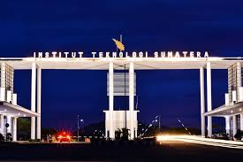

Institut Teknologi Sumatera (disingkat ITERA) adalah sebuah perguruan tinggi negeri yang terdapat di Provinsi Lampung. Lokasinya di antara wilayah Kabupaten Lampung Selatan dengan Kota Bandar Lampung. ITERA didirikan berdasarkan Peraturan Presiden Nomor 124 Tahun 2014 tentang Pendirian Institut Teknologi Sumatra (Lembaran Negara Republik Indonesia Tahun 2014 Nomor 253) yang ditetapkan Presiden Republik Indonesia Dr. H. Susilo Bambang Yudhoyono pada tanggal 6 Oktober 2014 dan diundangkan tanggal 9 Oktober 2014. Walaupun peresmiannya dilaksanakan pada tahun 2014, tetapi Itera sudah memulai kegiatan akademik dengan menerima mahasiswa baru sejak tahun 2012-2013. Selain ITB dan ITS, dengan dibukanya ITERA dan Institut Teknologi Kalimantan, kini pemerintah Indonesia memiliki empat institut teknologi.
